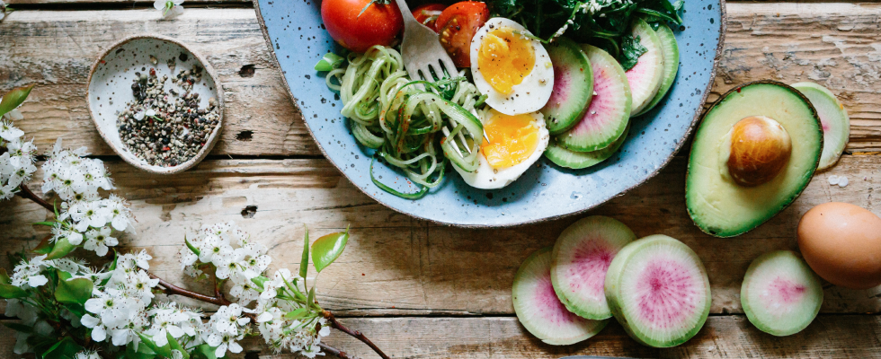
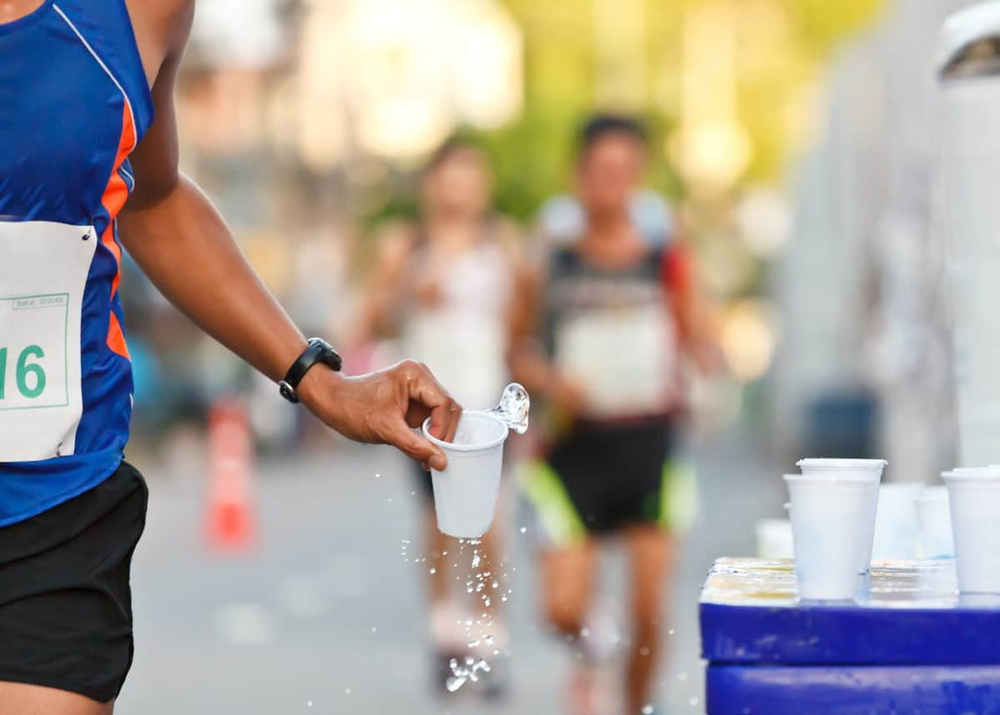

L'alimentation : le facteur majeur de la performance
Un marathon se prépare longtemps à l'avance ...
Un marathon ne se prépare pas une semaine avant la compétition, mais
plusieurs mois en amont. En général, quatre mois avant la course, il
est prudent d’aller voir un médecin généraliste et d’effectuer une
prise de sang, pour vérifier s’il y a des carences ou non.
La clé d’une alimentation idéale pour préparer un marathon, c’est de
consommer tous les groupes d’aliments, pour ne pas créer
d’insuffisances ou de carences. Le corps a besoin, de protéines pour
construire le muscle, de lipides avec de la bonne matière grasse et
de glucides, notamment via les féculents, pour donner de l’énergie
au corps.Il faut proscrire à tout prix les aliments transformés, et
opter pour des aliments de saison. Par exemple en janvier, on évite
les tomates, le melon ou la pastèque, qui vont être importés et un
peu dépourvus de leurs nutriments. Il faut plutôt opter pour de la
courge ou du poireau. La clé, c’est de respecter la logique de la
nature. L’hydratation doit également faire l'objet d'une attention
particulière. On ne doit s’hydrater qu’avec de l’eau. Quatre mois
avant le marathon, il faut donc impérativement diminuer les sodas
éventuels, les jus de fruits industriels et les boissons chimiques.
»

Une priorité : boire de l'eau en quantité
La prise d’une boisson énergétique est intéressante afin de se
réhydrater et de limiter la baisse des stocks de « sucres ». Un
minimum de 500mL par heure est à respecter, quantité à augmenter si
les conditions atmosphériques sont chaudes, sèches et « ventées » !
Cette dernière doit être de préférence isotonique (ambiance neutre à
froide) ou hypotonique (ambiance neutre à chaude) afin que
l’assimilation (donc l’hydratation) soit optimisée et les troubles
digestifs minimisés.
Quant à la question de boire ou manger pendant la course, il est
préconisé essentiellement la prise de boisson pour son apport
complet en macro et micronutriments. Le solide (barres énergétiques
essentiellement) n’est pas « vital » étant donné la durée de
l’effort assez courte (inférieure à 5h). Un intermédiaire, le gel
énergétique, peut être envisagé mais en appoint de la boisson de
l’effort.

Pour une bonne récupération : manger léger et continuer à bien
s'hydrater
Que ce soit juste après l’effort ou dans les jours qui suivent, il
ne faut pas hésiter à boire à satiété. Surtout des boissons gazeuses
riches en sels minéraux alcalinisants comme le bicarbonate, le
potassium ou le magnésium et ajouter du citron pressé (citrate). Et
bien sûr, il faut éviter l’alcool au maximum ainsi que les repas
trop lourds. Les menus méditerranéens anti-inflammatoires seront
privilégiés : poissons, légumes verts, fruits, viande blanche et
acides gras essentiels comme les oméga-3 (noix, huile de colza,
poissons gras).
Certains aliments riches en tryptophanes boostent la mélatonine et
favorisent le sommeil, comme la banane, le saumon, le jambon, le
thon, les céréales complètes, les produits laitiers ou les fruits
secs qui contiennent cet acide aminé.
La consommation de glucides (glucose + fructose) après un effort est
particulièrement importante pour la réplétion des stocks de
glycogène au niveau musculaire (plutôt le glucose) et hépatique
(plutôt le fructose). Il en va de même pour la consommation de
protéines dont le but est de limiter le catabolisme (« la casse »)
et de favoriser l’anabolisme (« la construction ou reconstruction »)
des protéines lésées (muscles notamment). Cette consommation doit se
faire juste après l’effort et le plus tôt possible. En effet, plus
cette consommation est rapide et plus la quantité de resynthèse est
importante. On parle souvent de « fenêtre métabolique ».